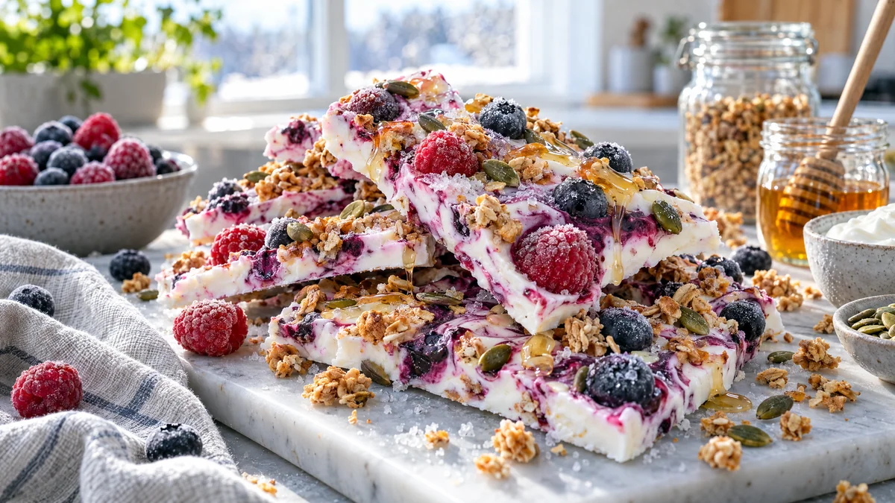

RESTFEST · RECEPTDessert · Mellanmål
Fryst yoghurtbark med bär, honung och granola
Den sista burken turkisk yoghurt, en påse frysta bär och en sked honung. Yoghurten breds ut på en plåt, marmoreras med krossade bär, strös över med granola och fryses tills den kan brytas i stora, glittrande flak. Ett kallt, krispigt mellanmål som ser ut som skärvor av rosa marmor.
- Förberedelse
- 10 min + minst 3 tim i frysen
- Tillagning
- 0 min
- Portioner
- ca 20 flak
- Nivå
- Nybörjare
 Det här behöver du
Det här behöver du
Tryck på + vid det du behöver köpa.
Till servering
Gör så här
- Klä en plåt eller ett stort fat som får plats i frysen med bakplåtspapper.
- Rör ihop yoghurt, honung och vaniljsocker.
- Krossa hälften av bären lätt med en gaffel så att de släpper saft.
- Bred ut yoghurten på pappret till en rektangel, ca 1 cm tjock.
- Klicka ut de krossade bären och dra dem genom yoghurten med en tandpetare eller kniv, så att den blir marmorerad i rosa och lila.
- Strö över resten av bären, granolan och pumpafröna och tryck ner dem lätt.
- Frys i minst 3 timmar, tills barken är helt fast. Bryt den i oregelbundna flak.
Dekoration och servering
- Ställ flaken på högkant, lätt överlappande, på ett kallt fat precis före servering.
- Ringla över lite extra honung och strö över några frysta bär.
- Ta fram barken 5 minuter före servering, då blir den lagom mjuk att bita i.
- Förvara flaken i frysen i en burk med bakplåtspapper mellan lagren, där håller de i ca 1 månad.
Mått och ugnstemperaturer
Måtten är svenska (dl, msk, tsk, krm). Ugnstemperaturerna gäller vanlig ugn med över- och undervärme; med varmluft, sänk med 20 grader.